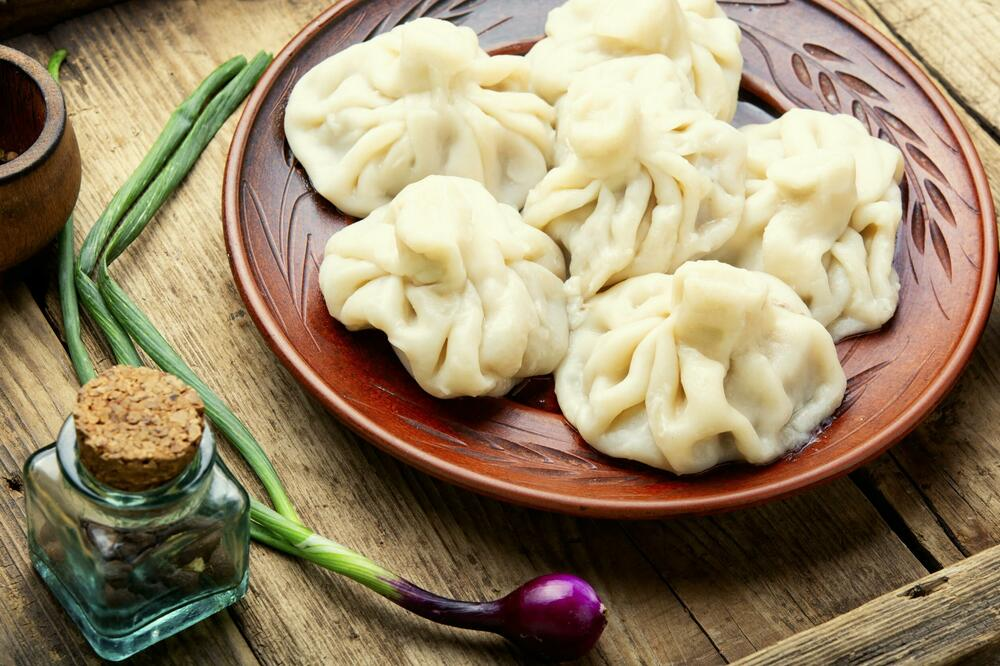

Hinkali

Description
It is almost impossible to make hinkali at home,
how badly hungry you must be to do it?
Ingredients
Steps
- Make a big rounds from dough
- Put meat into the dough and make bags from it
- Add olive oil into each bag
- Put it into the boiling water for 10 minutes